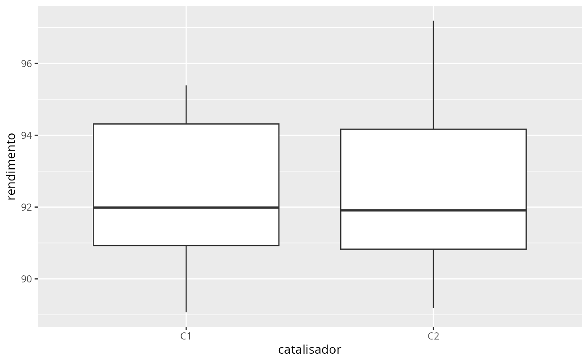
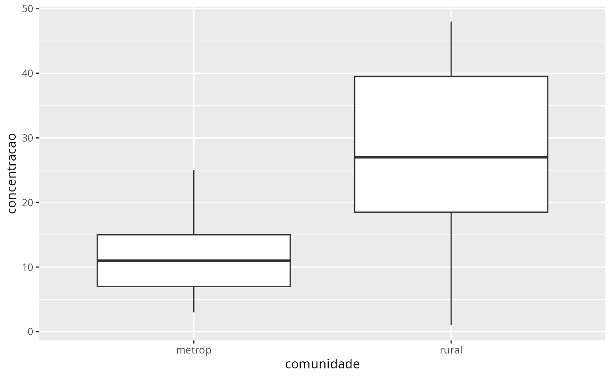

Os chamados testes não-paramétricos são mais flexíveis do que os testes paramétricos, uma vez que não requerem a especificação de uma distribuição de probabilidades especifica para o conjunto de dados. Entretanto, os testes paramétricos nos permitem fazer inferências mais precisas quando as suposições necessárias para a realização de nossas inferências são satisfeitas pelos dados.
O teste t para uma ou duas amostras depende da suposição de normalidade dos dados. Quando tal é suposição é violada, uma alternativa é utilizarmos algum teste não-paramétrico. Na sequência estudaremos alguns testes não-paramétricos bastante utilizados na prática quando o teste t se mostra inapropriado. São eles:
Conforme vermos mais adiante, ts testes mencionados acima podem ser
realizados no software R utilizando-se a função
stats::wilcox.test().
O teste dos postos assinalados de Wilcoxon corresponde ao equivalente não-paramétrico do teste t envolvendo uma única amostra.
Considere uma amostra \(X_{1}, \cdots, X_{n}\). A aplicação do teste dos postos assinalados de Wilcoxon depende das seguintes suposições:
Considere uma amostra \(X_{1}, \cdots, X_{n}\) de uma variável aleatória contínua \(X\), e \(Y_{1}, \cdots, Y_{m}\) uma amostra aleatória de uma variável aleatória contínua \(Y\).
O teste da soma dos postos de Wilcoxon para amostras independentes pode ser empregado em situações nas quais temos o interesse em testar a hipótese de que as duas populações investigadas diferem em locação, isto é, se ambas as populações possuem a mesma mediana ou média, ou se uma das populações tende a ter valores maiores (menores) que a outra.
library(planex)
library(tidyverse)
data(catalisadores)
glimpse(catalisadores2)
#> Rows: 8
#> Columns: 2
#> $ C1 <dbl> 91.50, 94.18, 92.18, 95.39, 91.79, 89.07, 94.72, 89.21
#> $ C2 <dbl> 89.19, 90.95, 90.46, 93.21, 97.19, 97.04, 91.07, 92.75
cat <- catalisadores2 %>%
pivot_longer(
cols = everything(),
names_to = "catalisador",
values_to = "rendimento"
) |>
mutate(
catalisador = as.factor(catalisador)
)
ggplot(cat, aes(x=catalisador, y = rendimento)) +
geom_boxplot()
fit <- aov(rendimento ~ catalisador, data = cat)
# testando a suposição de normalidade:
shapiro.test(residuals(fit))
#>
#> Shapiro-Wilk normality test
#>
#> data: residuals(fit)
#> W = 0.93879, p-value = 0.3345
# Testando a igualdade das variâncias:
var.test(rendimento ~ catalisador, data = cat)
#>
#> F test to compare two variances
#>
#> data: rendimento by catalisador
#> F = 0.63907, num df = 7, denom df = 7, p-value = 0.5691
#> alternative hypothesis: true ratio of variances is not equal to 1
#> 95 percent confidence interval:
#> 0.1279433 3.1920724
#> sample estimates:
#> ratio of variances
#> 0.6390651
# testando a igualdade das médias:
t.test(rendimento ~ catalisador, data = cat, var.equal = TRUE)
#>
#> Two Sample t-test
#>
#> data: rendimento by catalisador
#> t = -0.35359, df = 14, p-value = 0.7289
#> alternative hypothesis: true difference in means between group C1 and group C2 is not equal to 0
#> 95 percent confidence interval:
#> -3.373886 2.418886
#> sample estimates:
#> mean in group C1 mean in group C2
#> 92.2550 92.7325
# alternativa não-paramétrica do teste t:
wilcox.test(rendimento ~ catalisador, data = cat, conf.int = TRUE)
#>
#> Wilcoxon rank sum exact test
#>
#> data: rendimento by catalisador
#> W = 31, p-value = 0.9591
#> alternative hypothesis: true location shift is not equal to 0
#> 95 percent confidence interval:
#> -3.54 2.64
#> sample estimates:
#> difference in location
#> -0.345
data(arsenio)
arsenio
#> metrop rural
#> 1 3 48
#> 2 7 44
#> 3 25 40
#> 4 10 38
#> 5 15 33
#> 6 6 21
#> 7 12 20
#> 8 25 12
#> 9 15 1
#> 10 7 18
arsenio <- arsenio %>%
pivot_longer(
cols = everything(),
names_to = "comunidade",
values_to = "concentracao"
)
arsenio
#> # A tibble: 20 × 2
#> comunidade concentracao
#> <chr> <int>
#> 1 metrop 3
#> 2 rural 48
#> 3 metrop 7
#> 4 rural 44
#> 5 metrop 25
#> 6 rural 40
#> 7 metrop 10
#> 8 rural 38
#> 9 metrop 15
#> 10 rural 33
#> 11 metrop 6
#> 12 rural 21
#> 13 metrop 12
#> 14 rural 20
#> 15 metrop 25
#> 16 rural 12
#> 17 metrop 15
#> 18 rural 1
#> 19 metrop 7
#> 20 rural 18
ggplot(arsenio, aes(x=comunidade, y=concentracao)) +
geom_boxplot()
# verificando a suposição de normalidade:
fit <- aov(concentracao ~ comunidade, data = arsenio)
shapiro.test(residuals(fit))
#>
#> Shapiro-Wilk normality test
#>
#> data: residuals(fit)
#> W = 0.96607, p-value = 0.6708
# testando a igualdade das variâncias:
var.test(concentracao ~ comunidade, data = arsenio)
#>
#> F test to compare two variances
#>
#> data: concentracao by comunidade
#> F = 0.24735, num df = 9, denom df = 9, p-value = 0.04936
#> alternative hypothesis: true ratio of variances is not equal to 1
#> 95 percent confidence interval:
#> 0.06143758 0.99581888
#> sample estimates:
#> ratio of variances
#> 0.2473473
# testando a igualdade das médias:
t.test(concentracao ~ comunidade, data = arsenio)
#>
#> Welch Two Sample t-test
#>
#> data: concentracao by comunidade
#> t = -2.7669, df = 13.196, p-value = 0.01583
#> alternative hypothesis: true difference in means between group metrop and group rural is not equal to 0
#> 95 percent confidence interval:
#> -26.694067 -3.305933
#> sample estimates:
#> mean in group metrop mean in group rural
#> 12.5 27.5
# alternativa não-paramétrica do teste t:
wilcox.test(concentracao ~ comunidade, data = arsenio)
#> Warning in wilcox.test.default(x = DATA[[1L]], y = DATA[[2L]], ...): cannot
#> compute exact p-value with ties
#>
#> Wilcoxon rank sum test with continuity correction
#>
#> data: concentracao by comunidade
#> W = 20.5, p-value = 0.02813
#> alternative hypothesis: true location shift is not equal to 0
data(vigas)
glimpse(vigas)
#> Rows: 9
#> Columns: 2
#> $ K <dbl> 1.186, 1.151, 1.322, 1.339, 1.200, 1.402, 1.365, 1.537, 1.559
#> $ L <dbl> 1.061, 0.992, 1.063, 1.062, 1.065, 1.178, 1.037, 1.086, 1.052
# obtendo a diferença par a par:
vigas <- vigas |>
mutate(
d = K - L
)
#visualizando:
head(vigas)
#> K L d
#> 1 1.186 1.061 0.125
#> 2 1.151 0.992 0.159
#> 3 1.322 1.063 0.259
#> 4 1.339 1.062 0.277
#> 5 1.200 1.065 0.135
#> 6 1.402 1.178 0.224
# obtendo as médias das colunas:
apply(vigas, 2, mean)
#> K L d
#> 1.3401111 1.0662222 0.2738889
# testando a suposição de normalidade:
shapiro.test(vigas$d)
#>
#> Shapiro-Wilk normality test
#>
#> data: vigas$d
#> W = 0.91678, p-value = 0.3663
# realizando o teste t de duas maneiras equivalentes:
t.test(vigas$d)
#>
#> One Sample t-test
#>
#> data: vigas$d
#> t = 6.0819, df = 8, p-value = 0.0002953
#> alternative hypothesis: true mean is not equal to 0
#> 95 percent confidence interval:
#> 0.1700423 0.3777355
#> sample estimates:
#> mean of x
#> 0.2738889
with(vigas, t.test(K, L, paired = TRUE))
#>
#> Paired t-test
#>
#> data: K and L
#> t = 6.0819, df = 8, p-value = 0.0002953
#> alternative hypothesis: true mean difference is not equal to 0
#> 95 percent confidence interval:
#> 0.1700423 0.3777355
#> sample estimates:
#> mean difference
#> 0.2738889
# alternativa não-paramétrica do teste t-pareado:
with(vigas, wilcox.test(K, L, paired = TRUE, conf.int = TRUE))
#>
#> Wilcoxon signed rank exact test
#>
#> data: K and L
#> V = 45, p-value = 0.003906
#> alternative hypothesis: true location shift is not equal to 0
#> 95 percent confidence interval:
#> 0.1590 0.3895
#> sample estimates:
#> (pseudo)median
#> 0.268
wilcox.test(vigas$d, conf.int = TRUE)
#>
#> Wilcoxon signed rank exact test
#>
#> data: vigas$d
#> V = 45, p-value = 0.003906
#> alternative hypothesis: true location is not equal to 0
#> 95 percent confidence interval:
#> 0.1590 0.3895
#> sample estimates:
#> (pseudo)median
#> 0.268